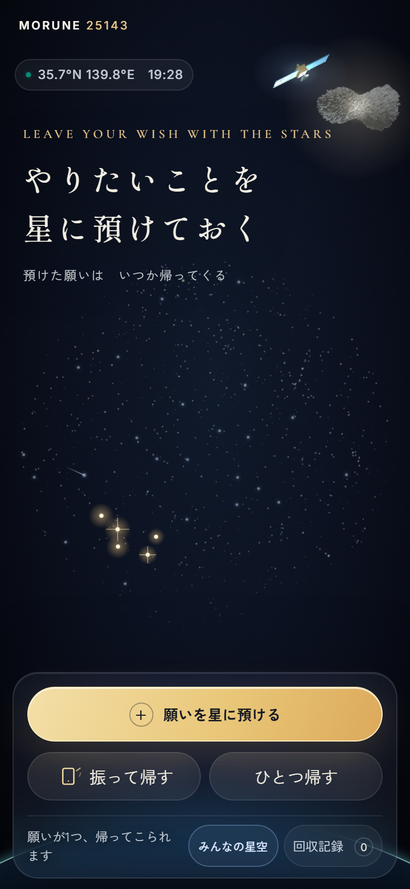
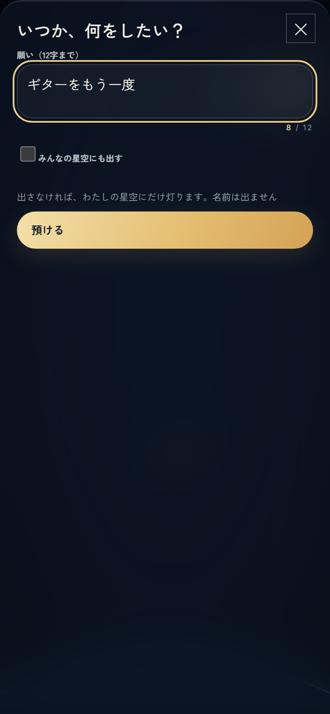
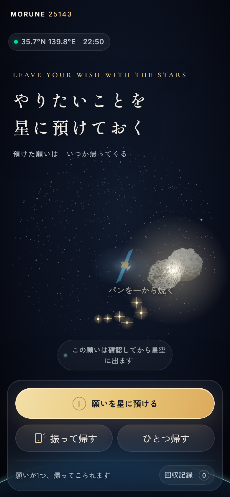
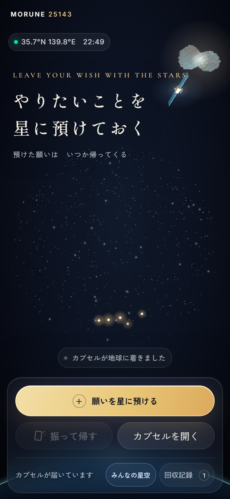
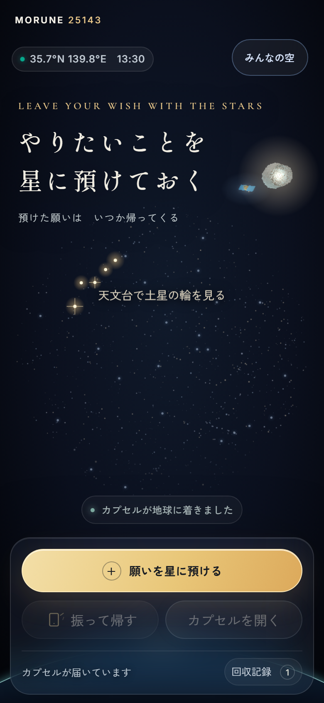
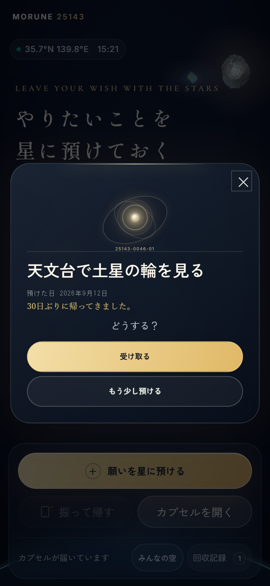
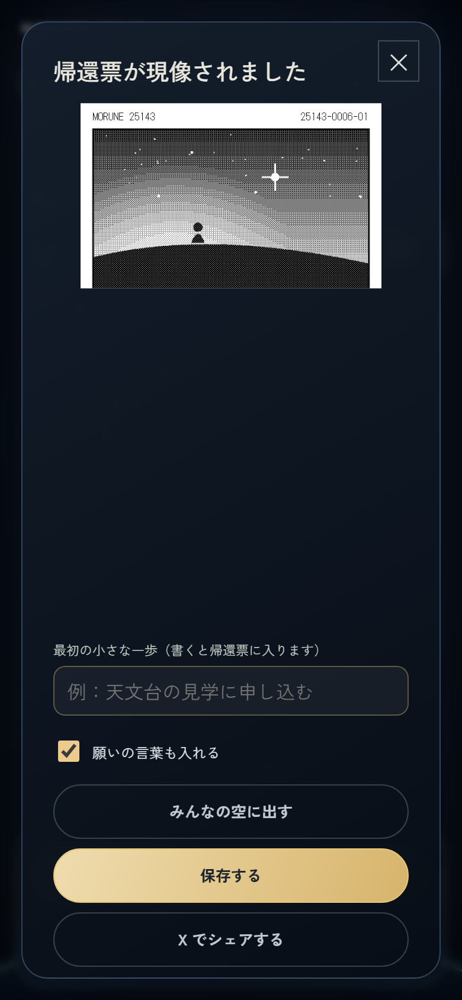
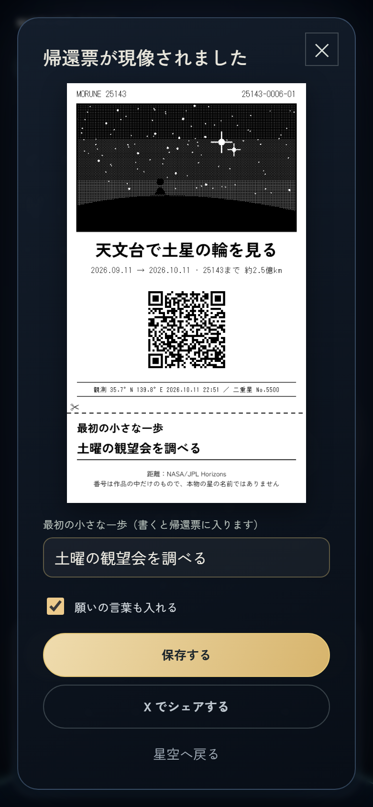

MORUNE 25143
Leave your wish with the stars
預けた願いは、名前なしでみんなの星空に灯ります。ある日、自分の願いだけが1つ帰ってきて、帰還票が現像されます。このページは、GGA セレクション（2026年10月14日 19:00）に向けて、画面とシステムの設計を1枚にまとめたものです。
Demo
ペルソナ（休職するみわさん）の願い「天文台で土星の輪を見る」が、30日ぶりに帰ってくるまで。横にスクロールできます。録画はこの PC の中だけのデータベースで撮り、ほかの人の願いは見本です。








Architecture
自分の願いと記録は端末の中に置きます。サーバーに届くのは、みんなの星空に出す言葉と、ランダムな ID だけです。
/api/orbits 人の番号（25143-0007）の発行/api/stars みんなの星空を読む・灯す/api/stars/return 帰ってきた星を空から下ろす/api/stars/report 通報（3件で非表示）/api/stars/delete 自分の星を消す/api/watch 見守り（合言葉つき）/api/art AI の絵（停止中）/api/wishes 同期（停止中）State
判断せずに閉じても、カプセルは手元に残り、次に開いたときに最初に差し出します。「今でなくていい」ので、いつでも星空へ戻せます。
%%{init: {"theme": "dark", "themeVariables": {"primaryColor": "#151c2f", "primaryBorderColor": "#e2b867", "primaryTextColor": "#f2eee6", "lineColor": "#9aa3b5", "background": "#151c2f"}}}%%
stateDiagram-v2
state "星空で待つ waiting" as waiting
state "カプセルが着いた returned" as returned
state "受け取った doing" as doing
[*] --> waiting : 預ける
waiting --> returned : 振る／ひとつ帰す（ランダムに1つ）
returned --> doing : 受け取る → 帰還票
returned --> waiting : もう少し預ける
returned --> returned : 閉じた（次に開いたら再開）
doing --> doing : 一歩（1日1回、6等星→1等星）
Data
| 置き場所 | 中身 | 理由 |
|---|---|---|
| 端末（IndexedDB） | 自分の願い、状態、預けた日、帰ってきた日、一歩の記録 | ログインなしで使え、名前を預からないため |
| 端末（localStorage） | 人の番号、はじめての1回を使ったか、送れなかった控え | オフラインでも続けられるため |
D1 orbits | 人の番号と軌道 ID | 番号は「最大＋1」を1文で入れ、同時でも重ならない |
D1 public_stars | 名前なしの願いの言葉、見守りの状態、表示の期限 | みんなの星空。帰還した星は30日、最長400日 |
D1 star_reports | 通報（端末ごとに同じ星へ1回） | 一人の通報だけで消えないように |
D1 watch_settings | 見守りの一時停止、合言葉のまちがい回数 | Cloudflare の回数制限が本番で止まらなかったため、数をデータベースで数える |
Limits
| 上限 | 値 | 理由 |
|---|---|---|
| 預けられる願い（1人） | 30個 | 多すぎると、1つずつ帰ってくる意味がなくなる |
| 公開できる願い（1人・1日） | 10件 | ふつうの使い方では届かない数 |
| 公開できる願い（全員・1日） | 500件 | 端末の ID は作り直せるので、全体にも上限。見守りの手間の最悪を決める |
| 書く言葉 | 12字 | 星空に浮かんでも、帰還票でも1行で読める |
| 見守りの合言葉のまちがい | 1分5回 | 当て推量を止める |
| 通報 | 3件で非表示 | 一人の通報だけで消えないように |
Decisions
コードは Claude と Codex に書かせ、互いにレビューさせました。何を作り、何をやめるかは自分で決めました。
Workers AI で実装したが、絵が願いのイメージとずれることが多い。→ 星のドット絵のガチャにした
文字のない線では、意味が伝わらなかった。→ 星が光るだけにした
振って星を明るくする仕組み。シェアとの違いが分かりにくい。→ X のいいねで応援を受け取る
季節によって願いの星が地平線に沈む。→ 天の北極を中心にした星座早見盤に作り直した
Quality
単体テスト 212件（状態の移り変わり、星の位置の計算、上限、見守り、帰還票、オフライン）。GitHub Actions で変更のたびに実行。画面の通しはブラウザの自動操作で確かめる。
この PC からビルドして wrangler deploy。直前の版に wrangler rollback で戻せる。下見の URL で確かめてから本番に出す。